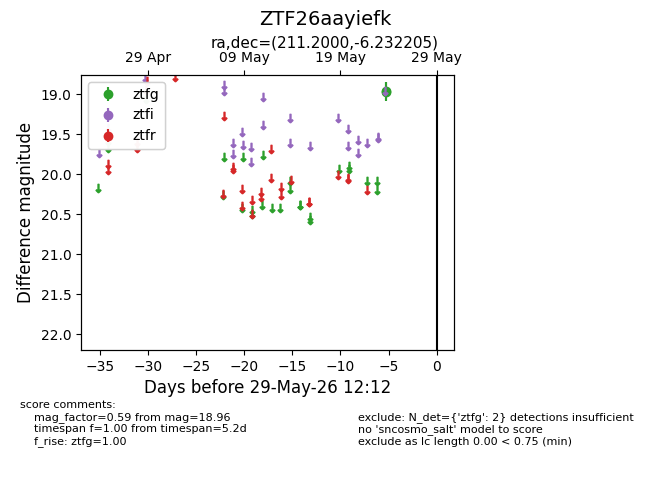
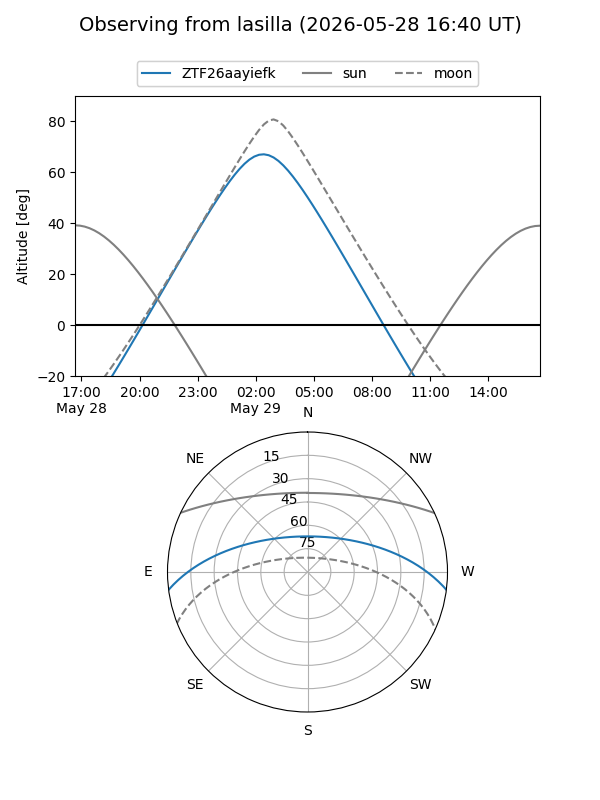
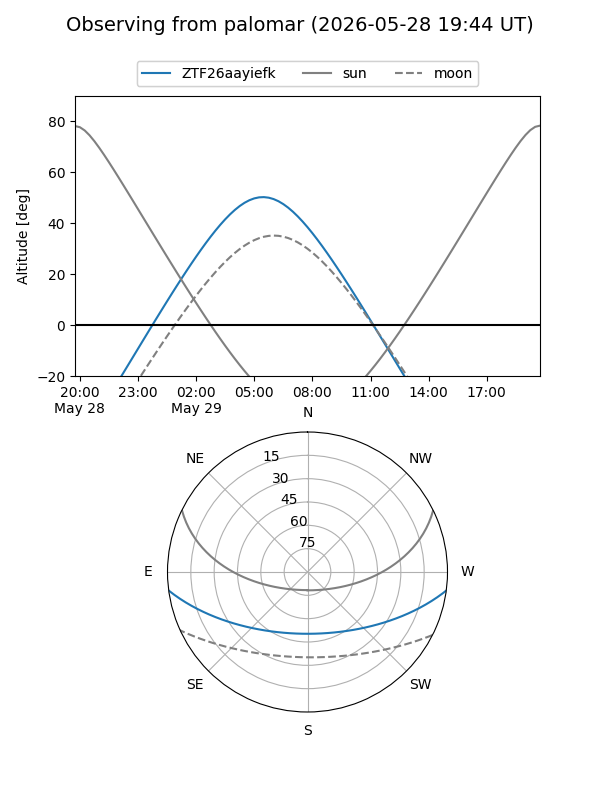

ZTF26aayiefk
Target ZTF26aayiefk at 2026-05-29 12:16
Aliases and brokers:
lsst-FINK: link
lsst-Lasair: link
lsst-ALeRCE: link
ztf-FINK: link
ztf-Lasair: link
ztf-ALeRCE: link
alt names
ZTF26aayiefk (ztf,fink_ztf)
Coordinates:
equatorial (ra, dec) = 211.2000,-6.23221
equatorial (HMS+DMS) = 14:04:47.99,-06:13:55.94
galactic (l, b) = (333.6292,+52.21228)
Flags:
Photometry:
last ztfg=18.96
2 ztfg detections
Lightcurve

Visibility


Additional plots